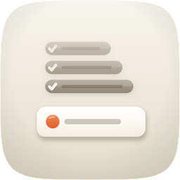
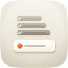
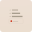

whats-left — icon audit
Direction 2, sub-register (a): porcelain cushion + gel objects, in the fledgeling-plugins house palette sampled out of clarify and report. Four takes across three engines; losers stay in with their scores.
| Take | 128px | 64px | 48px | 32px | 16px | 32px ×6 | Verdict |
|---|---|---|---|---|---|---|---|
| Engine A — hand-authored SVG master11/12 |  |  | Ships. The stack thins upward and the one standing card carries the only saturated colour on the tile, so the read survives to 16px as shape-and-value rather than as hue. Known liability: the tick marks are a 128px-and-up detail and are gone by 32 — deliberate, since the bars carry the identity without them. | ||||
| Engine C — Gemini 3 Pro raster, family squircle applied9/12 | Not shipped, but it won two material arguments and both were salvaged into the master: a line of text inside each settled row, which turns blank bars into list items, and a darker bottom lip under each bar that gives the gel real extrusion. Fails #1 in its own right — it authored its own inset tile rather than going full-bleed, so the silhouette is a rounded rect floating inside the canvas. | ||||||
| Engine C — raster, as generated7/12 | Kept for the record. Same take before masking; the baked inner tile and its own drop shadow are visible against the family silhouette, which is exactly the pre-masked-raster failure the corpus census names. | ||||||
| Engine B — Arrow 1.1, independent vector take5/12 |  | Loses. Real vector source and clean geometry, but flat throughout: no cushion, no rim light, no contact shadow, and the value spread across the three bars is too narrow for the recede to read. Nothing salvaged. |
Recommendation: the Engine A master. It is the only take that is full-bleed against the family silhouette, and the only one whose three settled rows carry a wide enough value spread for the recede to read below 64px. Its known liability is that the ticks vanish by 32px; that is accepted, because the identity is the thinning stack plus one standing card with a warm dial, and all three survive. Against its sibling clarify — three equal cards, one chosen — this reads as progress rather than as choice, which is the distinction the two skills need at marketplace size.